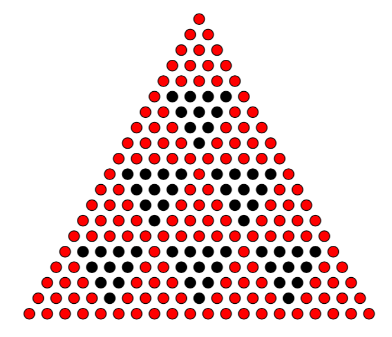
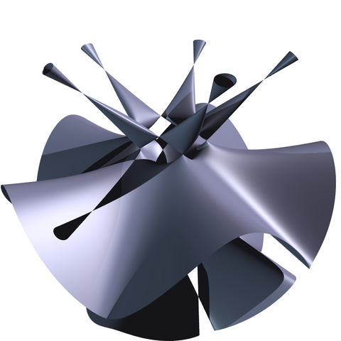

A product rule for triangular numbers
David Radcliffe
dradcliffe@gmail.com
MAA North Central Section Fall 2018 Meeting
October 13, 2018
Triangular numbers
\[ \begin{align*} T(n) & = 1 + 2 + 3 + \cdots + n \\ & = \frac12 n(n+1). \end{align*} \]
The product rule for triangular numbers

\(T(mn) = \color{red} {T(m)T(n)} + T(m-1)T(n-1) \)
\(T(20) = \color{red} {T(5)T(4)} + T(4)T(3) \)
Main Result
Let \(K\) be a field of characteristic zero.
Let \(T : \mathbb{N}_0 \to K\) be a function satisfying \[T(mn) = T(m)T(n) + T(m-1)T(n-1)\] for all \(m, n \ge 1\).
Then \(T\) must be one of the following five sequences:
\(T\) must be one of the following five sequences:
- \((0, 0, 0, 0, 0, 0, 0, 0, 0, 0, 0, \ldots)\)
- \((1/2, 1/2, 1/2, 1/2, 1/2, 1/2, \ldots)\)
- \((0, 1, 0, 0, 1, 0, 0, 1, 0, 0, 1, \ldots)\)
- \((0, 1, 1, 2, 2, 3, 3, 4, 4, 5, 5, \ldots)\)
- \((0, 1, 3, 6, 10, 15, 21, 36, 45, \ldots)\)
Conversely, each of these sequences satisfies the product rule for triangular numbers.
A generalized product rule
What sequences satisfy
\[T(mn) = aT(m)T(n) + bT(m-1)T(n-1)\]
for all \(m, n \ge 1\)?
(\(a\) and \(b\) are constants.)
\[T(mn) = aT(m)T(n) + bT(m-1)T(n-1)\]
The only solutions are...
- The five sequences listed previously.
- Completely multiplicative sequences. \[T(mn) = T(m)T(n);\quad m,n\in \mathbb{N}\]
- All nonzero scalar multiples of the above.
- That's it!
But how do we prove it?

Solving a special case
Solve \(T(mn) = T(m)T(n) + zT(m-1)T(n-1)\)
where \(T(0)=0\), \(T(1)=1\), and \(z\ne 0\).
Let \(x = T(2)\) and \(y = T(3)\).
\[ \begin{align*} T(2n) & = T(2)T(n) + zT(1)T(n-1) \\ & = xT(n) + zT(n-1) \\ T(4n) & = T(4) T(n) + zT(3) T(n-1) \\ & = (x^2 + z) T(n) + yz T(n-1) \\ T(4n) & = T(2)T(2n) + zT(1)T(2n-1) \\ & = xT(2n) + zT(2n-1) \end{align*}\]
Combine these equations...
Combine these equations...
\(T(2n) = xT(n) + zT(n-1)\)
\(T(2n-1) = T(n) + (y-x) T(n-1)\)
Using these recurrences, we can express all \(T(n)\) in terms of \(x, y, z\).
But we can calculate some of the terms in a different way to get different expressions in terms of \(x, y, z\).
\(T(9) = T(3)^2 + zT(2)^2\)
\(T(15) = T(3)T(5) + zT(2)T(4)\)
\(T(18) = T(3)T(6) + zT(2)T(5)\)
\(T(25) = T(5)^2 + zT(4)^2\)
Equating these expressions yields the following system of equations.
\[ \begin{align*} 0 = & \ x^3 - x^2y + x^2z + x^2 - xy + xz + y^2 - yz - y\\ 0 = & \ x^3z - 3x^2y + 3xy^2 + xz^2 - y^3 + y^2 - 2yz \\ 0 = & \ x^4 - x^3y - 2x^3z + x^3 + x^2yz - x^2y \\ & \ + x^2z + xy^2 + xyz - xy - xz^2 - yz^2 \\ 0 = & \ x^4z + x^4 - x^3y + x^2yz - x^2y + 2x^2z^2 \\ & \ + x^2z - x^2 - xy^2z + xy^2 + xy - y^2z + z^3 - z \end{align*} \]
Finding a Gröbner Basis
\[ \begin{align*} 0 &= 4x^3 + 4x^2 - 8xy - y^2z + 5yz^2 + yz - z^4 - 4z^3 + z^2 + 4z \\ 0 &= 6x^2y - 6xy - 6xz - y^3 + y^2z - 2y^2 + 2yz^2 + 4yz + 3y - 3z^3 + 3z \\ 0 &= 12x^2z - 2y^3 + 5y^2z + 8y^2 - 11yz^2 - 7yz - 6y + 3z^4 + 6z^3 - 3z^2 - 6z \\ 0 &= 2xy^2 - 2xy - 2xz - y^3 + y^2z + y - z^3 + z \\ 0 &= 6xyz - y^3 + y^2z + 4y^2 - 7yz^2 - 2yz - 3y + 6z^4 + 3z^3 - 6z^2 - 3z \\ 0 &= 6xz^2 + y^3 - 4y^2z - 4y^2 + 7yz^2 - yz + 3y - 3z^4 - 3z^3 + 3z^2 + 3z \\ 0 &= y^4 - 4y^3 - 23y^2z + 3y^2 + 27yz^2 + 21yz - 18z^4 + 18z^2 \\ 0 &= z(y^3 - 8y^2 + 5yz + 7y - 7z^3 + 7z) \\ 0 &= z(y + z)(z - 1)(y - z - 1) \\ 0 &= yz^2(z - 1) \\ 0 &= z^3(z - 1)(z + 1) \end{align*} \]
Solving the system
The system has the following solutions:
\(\{(-1, 0, 0), (0, 0, -1), (0, 0, 0), \\ (0, 0, 1), (0, 1, 0), (1, 1, 0), \\ (1, 2, 1), (2, 3, 0), (3, 6, 1)\}.\)
But the solutions with $z=0$ can be eliminated...
and the solution \((0, 0, -1)\) doesn't work.
Therefore \((x, y, z) \in \{(0, 0, 1), (1, 2, 1), (3, 6, 1)\}.\)
Python code
from sympy import *
x, y, z = symbols('x y z')
def T(n):
if n < 4: return [0, 1, x, y][n]
k = n // 2
if n % 2: return T(k+1) + (y - x) * T(k)
return x * T(k) + z * T(k - 1)
eq9 = simplify(T(9) - T(3) ** 2 - z * T(2) ** 2)
eq15 = simplify(T(15) - T(3) * T(5) - z * T(2) * T(4))
eq18 = simplify(T(18) - T(3) * T(6) - z * T(2) * T(5))
eq25 = simplify(T(25) - T(5) ** 2 - z * T(4) ** 2)
system = [eq9, eq15, eq18, eq25]
basis = groebner(system, [x, y, z])
for poly in basis:
print(poly)
solutions = solve_poly_system(system, [x, y, z])
print(solutions)
Bonus: algebraic geometry
Ideals
- An ideal is an additive subgroup of a ring \(R\) which is closed under multiplication by elements of \(R\).
- Two sets of polynomials have the same sets of common zeros if they generate the same ideal.
- A good strategy to solve a complicated system of polynomial equations is to find a “nice” basis for the ideal that they generate.
Analogy: Linear systems
Consider the system of equations:
\[ \left\{ \begin{array}{rcrcrcrcr} x & - & 3y & + & z & - & 4 & = & 0\\ 2x & - & 8y & + & 8z & + & 2 & = & 0 \\ -6x & + & 3y & - & 15z & - & 9 & = & 0 \end{array} \right. \]
Not so easy to solve?
But an upper-triangular system is easy to solve.
\[ \left\{ \begin{array}{rcrcrcrcr} x & - & 3y & + & z & - & 4 & = & 0\\ & & 2y & + & 6z & + & 5 & = & 0\\ & & & & -18z & - & 36 & = & 0 \end{array} \right. \]
We use Gaussian elimination to convert the original system into an equivalent system of equations.
The new equations are linear combinations of the original equations.
Gröbner Bases
- A Gröbner basis for an ideal \(I\) is a finite collection of polynomials \(G = \{g_1, \ldots, g_n\} \subset I\) with the property that for every nonzero \(f \in I\), the leading term of \(f\) is divisible by the leading term of \(g_i\) for some \(i\).
- The Gröbner basis depends on a term ordering.
- Buchberger's algorithm takes any arbitrary generating set for a ideal and produces a Gröbner basis from it.